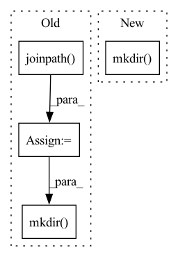

Pattern ID :17843

Before Change
@pytest.mark.parametrize("index_type", ["MatMulTensorEmbeddingIndex", "CDistTensorEmbeddingIndex"])
def test_embedding_cache_manager(index_type):
with tempfile.TemporaryDirectory() as f:
in_path = Path(f).joinpath(DUMMY_SOURCE)
os.mkdir(in_path)
model = PLSapbertModel(model_name_or_path=BERT_TEST_MODEL_PATH)
trainer = Trainer(logger=False)
parser = DummyParser(in_path=str(in_path))
manager = EmbeddingIndexCacheManager(
After Change
@pytest.mark.parametrize("index_type", ["MatMulTensorEmbeddingIndex", "CDistTensorEmbeddingIndex"])
def test_embedding_cache_manager(tmp_path: Path, index_type: str):
in_path = tmp_path.joinpath(DUMMY_SOURCE)
in_path.mkdir()
model = PLSapbertModel(model_name_or_path=BERT_TEST_MODEL_PATH)
trainer = Trainer(logger=False)
parser = DummyParser(in_path=str(in_path))
manager = EmbeddingIndexCacheManager(
In pattern: SUPERPATTERN
Frequency: 3
Non-data size: 4
Instances
Fragment ID: 58566361
Project Name: astrazeneca/kazu
Commit Name: fb3530797f43811186623d0194b4e8cef89919ea
Time: 2022-01-18
Author: elliot.ford@astrazeneca.com
File Name: kazu/tests/test_caching.py
M Class Name: AnonimousClass
N Class Name: AnonimousClass
M Method Name: test_embedding_cache_manager(2)
N Method Name: test_embedding_cache_manager(1)
M Parent Class:
N Parent Class:
M File Name: kazu/tests/test_caching.py
N File Name: kazu/tests/test_caching.py
M Start Line: 58
M End Line: 100
N Start Line: 57
N End Line: 98
'>
Before Change
def test_dictionary_cache_manager():
with tempfile.TemporaryDirectory() as f:
in_path = Path(f).joinpath(DUMMY_SOURCE)
os.mkdir(in_path)
parser = DummyParser(in_path=str(in_path))
manager = DictionaryIndexCacheManager(
index_type="DictionaryIndex", parsers=[parser], rebuild_cache=False
)
After Change
def test_dictionary_cache_manager(tmp_path: Path):
in_path = tmp_path.joinpath(DUMMY_SOURCE)
in_path.mkdir()
parser = DummyParser(in_path=str(in_path))
manager = DictionaryIndexCacheManager(
index_type="DictionaryIndex", parsers=[parser], rebuild_cache=False
)
'>
Fragment ID: 58566360
Project Name: astrazeneca/kazu
Commit Name: fb3530797f43811186623d0194b4e8cef89919ea
Time: 2022-01-18
Author: elliot.ford@astrazeneca.com
File Name: kazu/tests/test_caching.py
M Class Name: AnonimousClass
N Class Name: AnonimousClass
M Method Name: test_dictionary_cache_manager(1)
N Method Name: test_dictionary_cache_manager(0)
M Parent Class:
N Parent Class:
M File Name: kazu/tests/test_caching.py
N File Name: kazu/tests/test_caching.py
M Start Line: 102
M End Line: 126
N Start Line: 99
N End Line: 123
'>
Before Change
path = Path(path)
original_filename = path.name
original_dir = path.parent
new_path = original_dir.joinpath(f"cached_{prefix}_{original_filename}")
if create_if_not_exist:
try:
os.mkdir(new_path)
except FileExistsError:
logger.info(f"{new_path} already exists. Will not make it")
return new_path
After Change
if new_path.exists():
logger.info(f"{new_path} already exists. Will not make it")
else:
new_path.mkdir()
return new_path
'>
Fragment ID: 58566358
Project Name: astrazeneca/kazu
Commit Name: 3e77578d236a95c85de48032ef7210f3be27f187
Time: 2022-01-17
Author: elliot.ford@astrazeneca.com
File Name: kazu/utils/utils.py
M Class Name: AnonimousClass
N Class Name: AnonimousClass
M Method Name: get_cache_dir(3)
N Method Name: get_cache_dir(3)
M Parent Class:
N Parent Class:
M File Name: kazu/utils/utils.py
N File Name: kazu/utils/utils.py
M Start Line: 102
M End Line: 111
N Start Line: 104
N End Line: 112